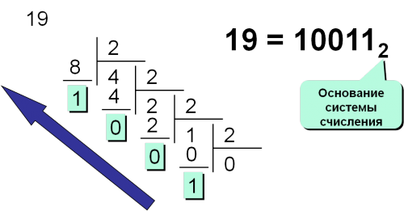
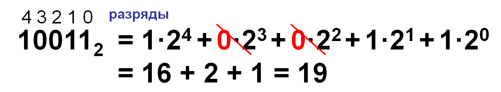
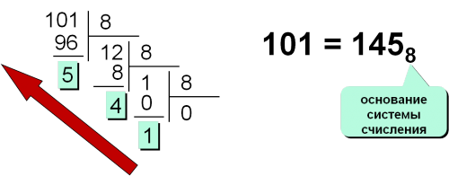
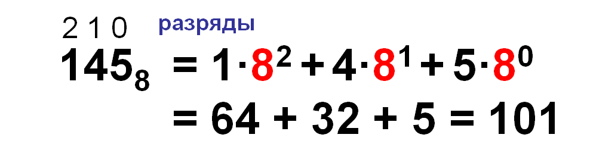
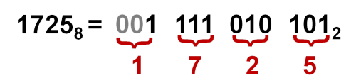
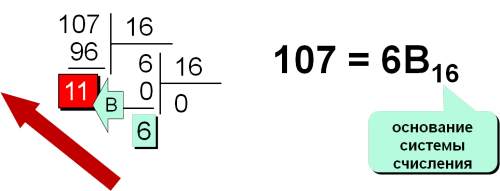
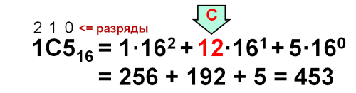
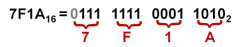

Информатика ОГЭ:
Разбор задание №10
Задание 10:
Суть данного задания заключается в переводе числа из N системы в систему X.
Рассмотрим способы перевода:
Перевод чисел из 10-й системы счисления в двоичную:
Для того, чтобы перевести число 10 из десятичной системы счисления в двоичную, необходимо осуществить последовательное деление на 2, то тех пор пока остаток не будет меньше чем 2.
Перевод чисел из двоичной системы счисления в десятичную:
Чтобы десятичное число перевести в двоичную систему счисления, необходимо последовательно делить его на два, каждый раз записывая результат в виде целого числа и остатка. Деление нужно продолжать до тех пор, пока не останется число равное единице. Итоговое число получается путём последовательной записи результата последнего деления и остатков всех делений в обратном порядке.
Перевод чисел из десятичной системы счисления в восьмеричную:
Перевод чисел из восьмеричной сист. сч-я в десятичную:
Перевод чисел из 8-й сист. сч-я в 2-ую и обратно триадами:
Перевод чисел из десятичной системы счисления в шестнадцатеричную:
Перевод из шестнадцатеричной системы счисления в десятичную:
Перевод чисел из двоичной сист. сч-я в шестнадцатеричную и обратно тетрадами:
Первая задача:
Среди приведённых ниже трёх чисел, записанных в различных системах счисления, найдите максимальное и запишите его в ответе в десятичной системе счисления. В ответе запишите только число, основание системы счисления указывать не нужно.
Решение:
- Последовательно переведем все данные числа в 10-ю систему счисления:
10
23 = 2*161 + 3*160 = 35
- Первое число = 35:
10
32 = 3*81 + 2*80 = 26
- Второе число = 26:
11110 = 1*24 + 1*23 + 1*22 + 1*21 + 0 = 30
- Треть число = 30. Наибольшее число — 35
Ответ: 35
Альтернативное решение
- Можно использовать Python для решения данной проблемы:
def f(x, i): x = int(str(x), i) return x print(max(f(23, 16), f(32, 8), f(11110, 2)))
Ответ: 35